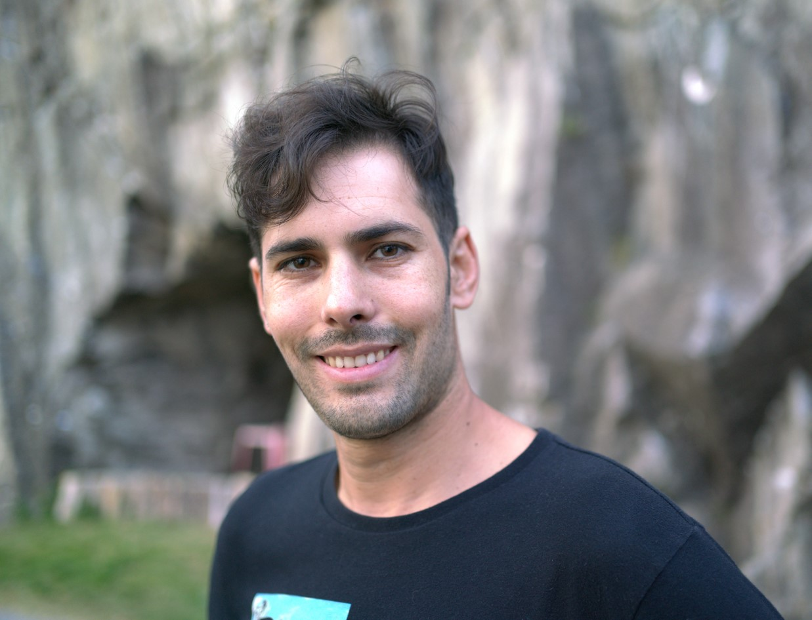

I have always been fascinated by photography. I remember when I was a child, I would love to look through my parents' photo albums and see all the pictures of our family and friends. I was amazed at how photographs could capture a moment in time and preserve it forever. When I was 10 years old, I got my first camera. It was a simple point-and-shoot camera, but I was so excited to have it. I started taking pictures of everything and everyone around me. I photographed my family and friends, my pets, and the places I went. As I got older, I started to learn more about photography. I read books and articles, and I took photography classes. I also started to experiment with different types of photography, such as landscape photography, portrait photography, and street photography. I love photography because it allows me to see the world in a new way. When I take a picture, I am not just capturing a moment in time. I am also capturing my own unique perspective on the world. I am passionate about photography and I love to share my work with others. I have exhibited my work in several local galleries and I have also published my work in several magazines and online publications. I am also a photography teacher. I love teaching others about the art of photography and helping them to develop their own unique style. I am grateful for the opportunity to share my love of photography with the world. Photography is more than just a hobby for me. It is a way of life. My interest in photography My interest in photography is not just a passing fad. It is a passion that has been with me for as long as I can remember. I love everything about photography, from the process of taking a picture to the satisfaction of seeing a finished image. I am particularly interested in landscape photography. I love to capture the beauty of the natural world and share it with others. I also enjoy portrait photography and street photography. I find it fascinating to capture the human experience and tell stories through my images. I am always striving to improve my photography skills and learn new things. I am also always looking for new ways to challenge myself and push the boundaries of what is possible with photography. I am grateful for the opportunity to pursue my passion for photography. It is a privilege to be able to share my work with the world and connect with others through my images.
